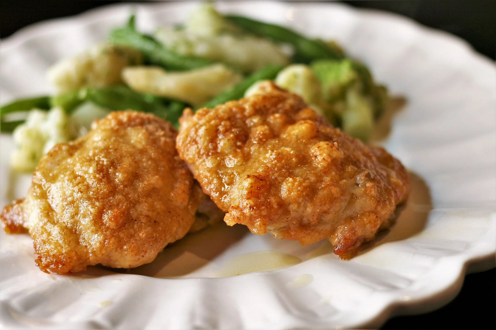

Parseman Chicken
Description
- Preparation time: 10 mins
- Cook: 25 mins
- Total: 35 mins
- Servings: 8
- Yield: 8 servings
Ingerdients
- ⅓ cup olive oil
- 1 cup grated Parmesan cheese
- 1 teaspoon celery salt
- 1 teaspoon cayenne pepper
- ½ teaspoon garlic powder
- 8 (5 ounce) boneless, skinless chicken thighs
Steps
- Preheat the oven to 375 degrees F (190 degrees C). Line a jelly roll pan with foil.
- Put olive oil in a shallow bowl. Mix together Parmesan cheese, celery salt, cayenne pepper, and garlic powder in another shallow bowl.
- Cut chicken thighs in half. Dip chicken pieces in olive oil so both sides are covered, then press one side in the Parmesan mixture until coated. Place on the prepared pan with the coating facing up.
- Bake in the preheated oven until chicken is no longer pink in the center and the juices run clear, about 25 minutes. An instant-read thermometer inserted into the center should read at least 165 degrees F (74 degrees C).